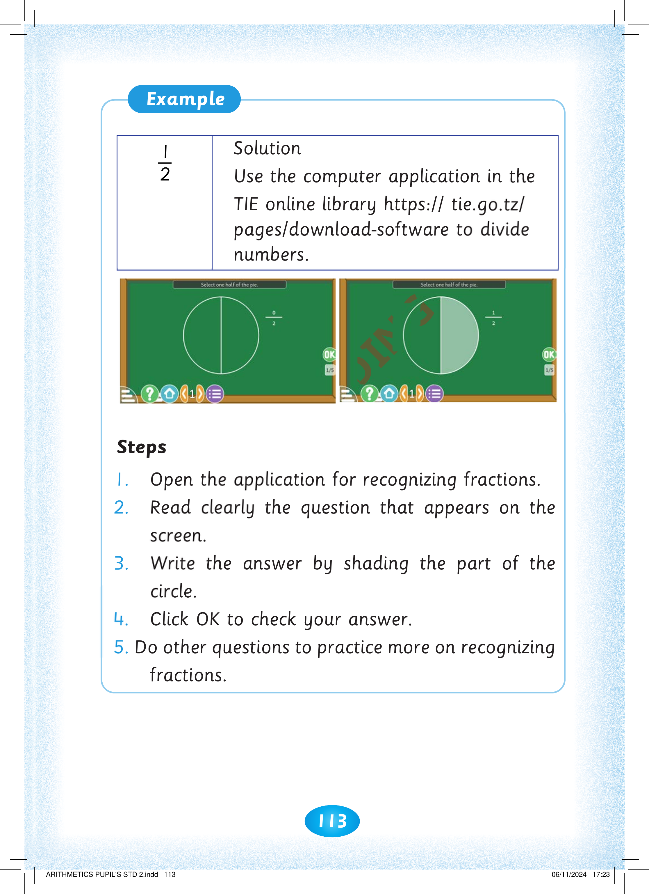
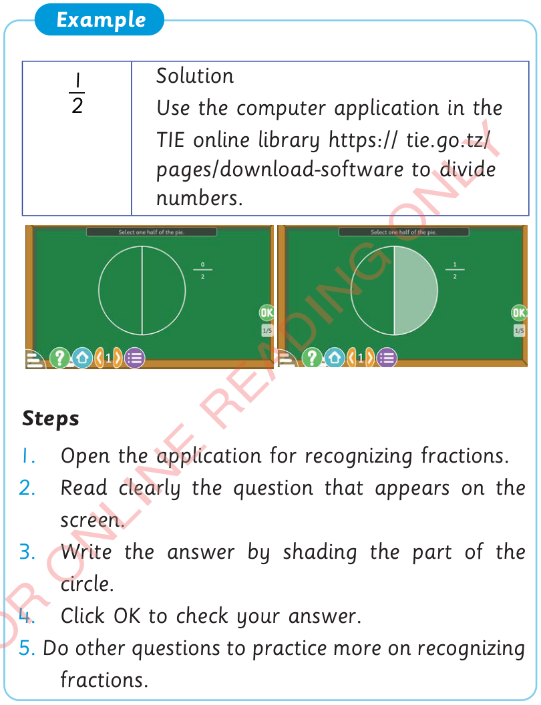

113



Example. One over two. Solution. Use the computer application in the TIE online library, https://tie.go.tz/pages/download-software, to divide numbers. Two computer-screen pictures show a circle divided into two equal parts, first with neither part shaded, and then with one part shaded to show one-half. Steps. 1. Open the application for recognizing fractions. 2. Read clearly the question that appears on the screen. 3. Write the answer by shading the part of the circle. 4. Click OK to check your answer. 5. Do other questions to practice more on recognizing fractions.


2
1
Solution
Use the computer application in the
TIE online library https:// tie.go.tz/ pages/download-software to divide numbers.
Steps
1. Open the application for recognizing fractions.
2. Read clearly the question that appears on the
screen.
3. Write the answer by shading the part of the circle.
4. Click OK to check your answer.
5. Do other questions to practice more on recognizing fractions.


ARITHMETICS PUPIL'S STD 2.indd 113
06/11/2024 17:23